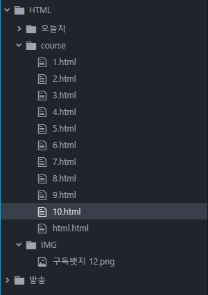

2. 컴퓨터에 있는 이미지를 홈페이지에 넣고 싶을 때 <img src="../IMG/구독뱃지 12.png">

1. 인터넷에서 원하는 이미지의 주소를 홈페이지에 넣고 싶을 때
<img src="https://ko.wikipedia.org/wiki/PNG#/media/%ED%8C%8C%EC%9D%BC:PNG_transparency_demonstration_1.png">

2. 컴퓨터에 있는 이미지를 홈페이지에 넣고 싶을 때
<img src="../IMG/구독뱃지 12.png">
<img src="../IMG/10.PNG">

위 이미지는 현재 HTML을 다루고 있는 폴더 이미지로, 방송 폴더에 있던 그림 중에 원하는 이미지만 골라와 따로 저장해주었습니다.
원본 width 속성 100px
HOME
WEB1. HTML & Internet
◀ PREV
NEXT ▷